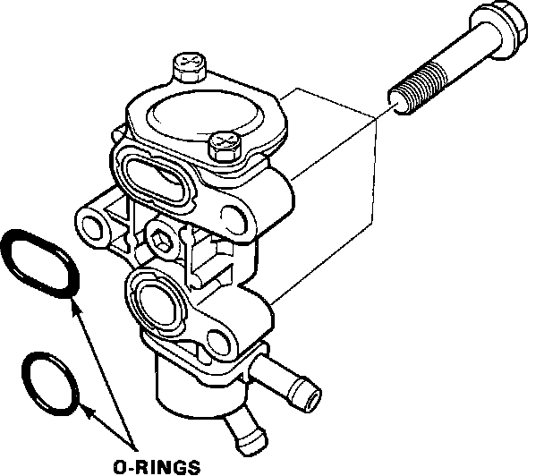

Auxiliary Air Valve (Idle Speed): Service and Repair
WARNING: Make sure engine is cool before removing the Fast Idle Valve as it is heated with engine coolant and may cause burns.Fast Idle Valve Location:

1. Remove air intake tube.
2. Remove the coolant hoses from the Fast Idle Valve.
3. Remove the three (3) mounting bolts.
4. Remove the Fast Idle Valve and clean all mating surfaces.
Fast Idle Valve:

5. Install new O-rings on the valve.
6. Reinstall the Fast Idle Valve and torque the three (3) mounting bolts to:
9 lb-ft (12 Nm)
7. Reinstall the coolant hoses.
8. Retest for proper operation refer to, "DIAGNOSIS AND TESTING PROCEDURES".